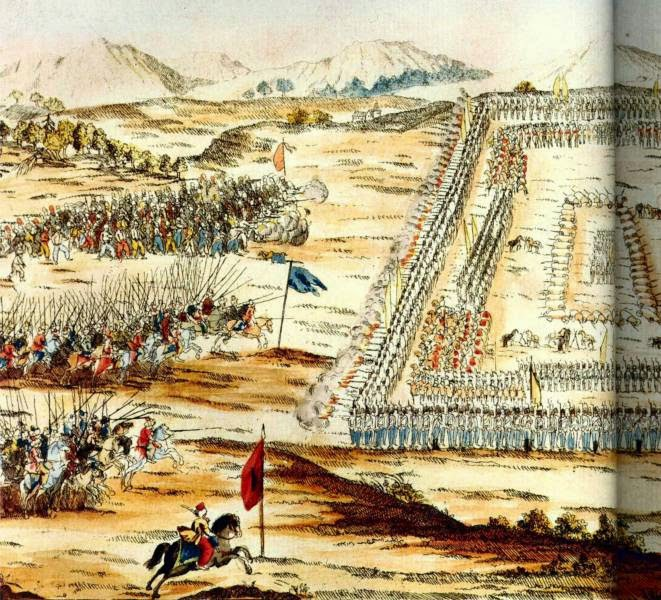
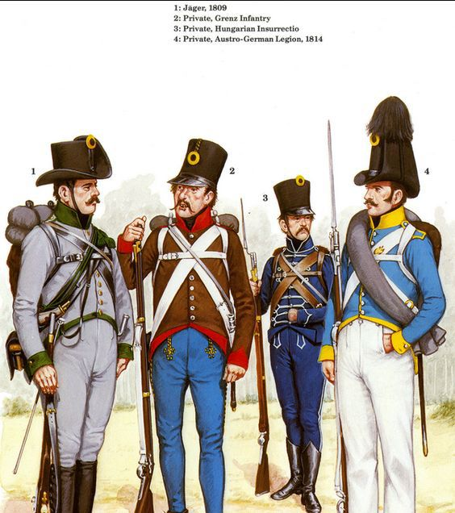

바그람 전투 (제11편) - 기병대의 궤멸
게시: 2017-08-20T15:43:45+09:00
기세 좋게 달려들어간 낭수티의 제1 중기병사단이 첫번째로 맞이한 난관은 그 지대가 너무 평평하다는 것이었습니다. 기병이 달리는데는 평평한 것이 좋지 않냐고요 ? 맞는 말씀입니다. 그러나 완만하게 오르내림이 있는 평원이 기병 돌격에는 더 좋았습니다. 여기 아더클라 앞마당처럼 너무 평평하면 저 멀리서 달려오는 기병대가 그대로 적의 시선과 대포에 노출되면 기병대에게 불리하기 때문이었습니다. 낭수티의 기병들이 번쩍이는 칼을 휘두르며 달려오는 동안, 오스트리아 보병들은 침착하게 방진(square)을 구성했습니다.

(오스만 투르크의 기병에 대항하여 보병 방진을 구성한 오스트리아군의 모습입니다. 1788년의 오스트리아-오스만 전쟁 때의 모습입니다. 머스켓 소총과 함께 총검이 개발되고 대포의 기동성이 향상되면서부터는, 기병은 어디까지나 보조적 위치로 전락하게 됩니다. 아마 징기스칸의 몽골기병들이 와도 이젠 보병을 당해낼 수 없었을 것입니다.)
당시 기병으로는 보병 방진을 '절대' 깰 수 없다는 것이 상식 중의 상식이었습니다. 계산 방법은 이렇습니다. 돌격하는 기병들은 좌우로 최소 약 1.2미터의 폭이 필요했습니다. 그에 비해 방진의 보병들은 60cm의 폭만 있으면 되었고, 또 방진의 보병들은 대개 4열로 늘어서 있었습니다. 즉, 한자루의 기병 군도에 대해, 4 x 2 = 8발의 총탄과 8자루의 긴 총검이 기다리고 있었습니다. 심지어 보병의 총에 총알이 들어있지 않다고 해도, 말은 영리한 동물이라서 대개 그 빽빽한 총검의 숲으로는 돌격해들어가지 않고 끝에는 반드시 옆으로 머리를 돌리곤 했습니다. 물론 간혹 기병대가 보병 방진을 깨뜨리는 경우가 있기는 했습니다. 그러나 이는 결코 그 기병대가 우수해서가 아니라, 미숙한 보병들이 엉성하게 보병 방진을 짰기 때문이거나 뭔가 사고가 있기 때문이었습니다.
뿐만 아니었습니다. 베르나도트의 포병들을 침묵시킬 정도로 압도적인 화력과 정확도를 자랑하던 오스트리아 포병대도 저 멀리서 칼을 꼬나쥐고 달려오는 프랑스군 기병대를 맞이할 준비를 했습니다. 원거리에서 날아오는 쇳덩어리 포탄에 낭수티의 건장한 기병들이 픽픽 나가 떨어지며 그 대오에 뻥뻥 구멍이 뚫렸지만 프링스 기병들은 그저 성모 마리아를 입 속에 되뇌이며 계속 달리는 수 밖에 없었습니다.
오스트리아 포병들에게 큰 피해를 입으며 헐레벌떡 달려들어간 곳에 기다리는 것은 총검을 고슴도치처럼 세우고 기다리는 오스트리아군 보병 방진이었습니다. 이들을 향한 기병 돌격은 당연히 실패했습니다. 낭수티의 기병들은 보병들의 일제 사격에 큰 피해를 입고 물러날 수 밖에 없었지요. 당연히 낭수티는 그대로 물러설 수 없었습니다. 그는 물러서는 기병대원들을 규합하여 다시 돌격을 감행했고 마침내 집단 전술 훈련이 가장 뒤떨어진 그렌츠(Grenz) 대대의 방진 하나를 깨뜨리는 쾌거를 이뤄냅니다.

(그렌츠 보병은 오스만 투르크와의 접경지대에서 차출된 발칸 반도 출신 보병들로서 주로 프랑스군의 볼티저(voltigeur)처럼 산개하여 싸우는 유격병 역할을 주로 했습니다. 전열 보병처럼 싸우는 것은 원래 그들의 몫이 아니었지요. 그림 속의 2번 병사가 그렌츠 보병입니다.)
하지만 거기까지가 한계였습니다. 좌우로 빽빽히 들어선 오스트리아 척탄병 대대들의 방진은 도저히 깨뜨릴 수가 없었습니다. 낭수티는 당혹감과 혼란, 무엇보다 사방에서 쏟아지는 총탄 속에서도 뛰어난 지휘 능력을 발휘하여 우왕좌왕하는 기병들을 이끌고 보병 방진 사이를 뚫고 오스트리아군 후방으로 나온 뒤, 방향을 휙 틀어 자신들을 괴롭힌 오스트리아 포병대를 향해 돌격했고, 포대 하나를 점령할 수 있었습니다. 그러나 곧 이어 리히텐슈타인(Liechtenstein) 대공의 오스트리아군 기병대가 뛰어나와 지친 이들을 공격해 왔습니다. 기병대의 무기는 사실 칼도 창도 권총도 아닌 속도였습니다. 그런 점에서 당시의 기병대는 현대의 공군과 비슷했습니다. 아무리 공군이 강력해도, 공군으로 전장을 지배할 수는 없습니다. 연료가 떨어지면 현장에서 물러가야 하니까요. 아무리 강력한 전폭기라고 해도, 지상에 앉아 있는 상태에서는 그야말로 쉬운 먹잇감에 불과합니다. 당시 낭수티의 기병대도 마찬가지였습니다. 이미 여러차례 전력 질주를 하여 말도 사람도 지친 기병대로는 전선을 틀어막을 수는 없었습니다. 프랑스군 기병대는 이제 완전히 붕괴되어 무질서하게 우르르 본진으로 후퇴했고, 이 와중에 오스트리아군에게 큰 피해를 입었습니다. 낭수티는 아무 부상을 입지 않고 무사히 돌아올 수 있었으나, 그와 함께 출격했던 2800명의 기병 중 되돌아온 것은 고작 1600명으로서, 무려 42%의 사상자를 냈습니다. 궤멸적 타격이었습니다.
여기서 베시에르는 무엇을 하고 있었을까요 ? 그도 놀고 있었던 것은 아니었습니다. 그는 낭수티를 먼저 보낸 뒤, 서둘러 황실 근위 기병들을 편성한 뒤 낭수티가 그렌츠 보병 대대의 방진을 깨뜨릴 즈음해서는 2천의 근위 기병들을 이끌고 막 돌격을 시작했습니다. 그는 란에게 당한 모욕도 떨쳐낼 겸, 정말 맨 앞에 나서서 오스트리아군을 향해 달려 나갔습니다. 특히 바로 뒤에서 나폴레옹이 그의 돌격을 지켜보고 있었으니 더욱 비장한 심정이었을 것입니다. 그러나 운이 좋다고 해야할지 나쁘다고 해야할지, 얼마 가지도 못한 상황에서 오스트리아군의 대포알 하나가 그를 향해 똑바로 날아왔습니다. 그 대포알은 그의 허벅지를 아슬아슬하게 스친 뒤 그가 탄 말의 엉덩이를 강타했습니다. 전속력으로 달리고 있던 그는 덕분에 땅바닥에 엄청난 세기로 처박히며 정신을 잃었고, 그의 뒤를 따르던 부하들은 모두 그가 전사했다고 생각하여 크게 놀랐습니다. 근위 기병대 지휘관을 역임하며 근위대 병사들과 가까운 사이였던 그가 쓰러지자 많은 근위대 병사들이 통곡을 하며 슬퍼했는데, 이 모습을 나폴레옹이 모두 지켜보고 있었다고 합니다. 나중에 전투가 끝난 뒤 나폴레옹은 정신을 차린 그에게 '근위대 병사들을 울게 만들다니 대단하네. 그러나 전과는 왜 그 모양인가 ?'라며 칭찬과 조롱을 함께 보냈다고 합니다.
쫓겨온 낭수티는 이제 지휘관을 잃고 우왕좌왕하는 근위 기병대까지 합해 3천이 넘는 기병들을 모으게 되었으나, 이제 다시 돌격한다고 해도 도저히 눈 앞의 오스트리아군을 깨뜨릴 엄두가 나지 않았습니다. 결국 그는 풀이 죽은 채로 큰 피해를 입은 기병대를 이끌고 돌아올 수 밖에 없었습니다. 낭수티의 악전고투 덕분에 마세나는 무사히 남쪽으로 진격할 수 있었습니다. 그러나 이제 마세나가 떠난 빈자리는 텅 빈 마르히펠트 평원 뿐이었습니다. 그 곳으로 오스트리아군이 몰려 나올텐데, 낭수티의 기병대까지 너덜너덜해진 상태로 물러났으니 그걸 틀어막을 부대는 존재하지 않았습니다. 대체 나폴레옹은 어쩌자고 이런 식의 작전 명령을 내린 것이었을까요 ? 설마 나폴레옹처럼 경험 많은 지휘관이 기병 사단 하나면 적의 군단 하나쯤 충분히 패퇴시킬 수 있다고 판단했던 것일까요 ? 물론 아니었습니다. 나폴레옹가 낭수티에게 바랐던 것은 오직 하나 시간을 버는 것 뿐이었고, 실제로 그것을 얻은 셈이었습니다. 낭수티가 물러난 빈자리로 오스트리아군이 몰려오자, 나폴레옹은 그들을 위해 야심차게 준비한 깜짝 선물을 내놓습니다.